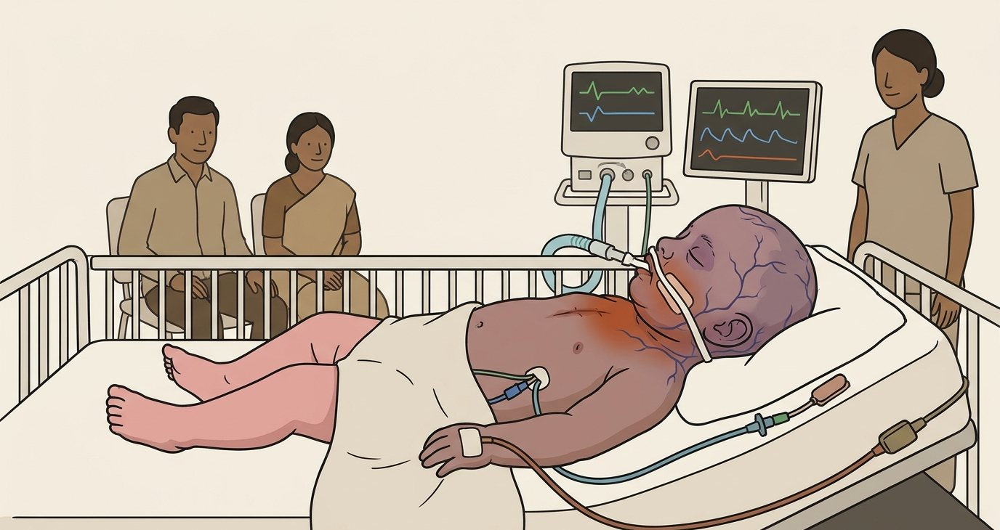
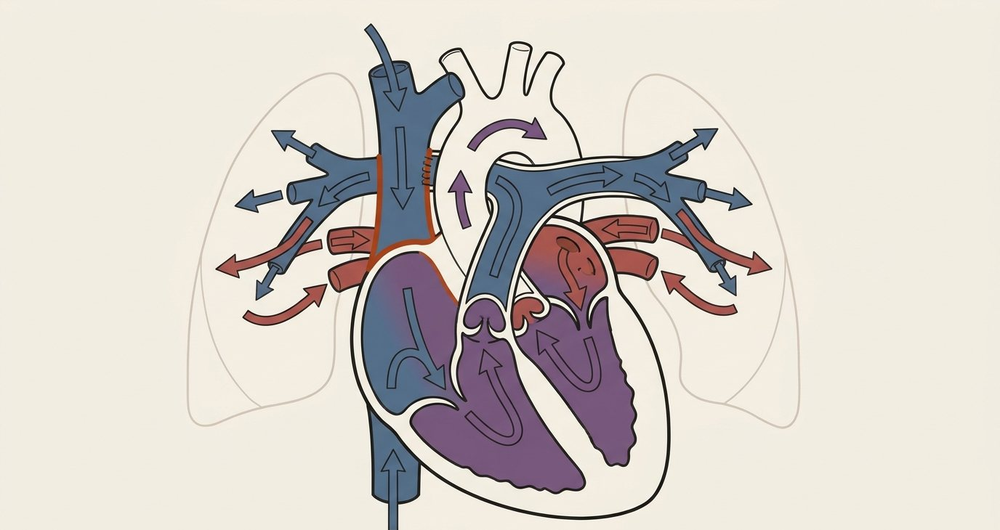
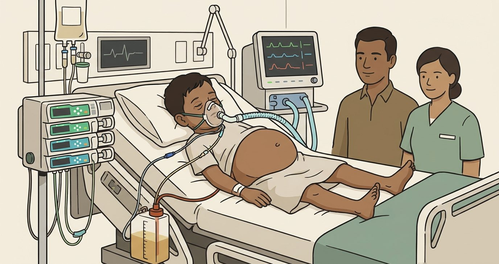

WhyIn a parallel circulation a high saturation means a starving body.
Congenital heart 4 of 5 · 6 months, 6 kg
6 months · after a Glenn
Live · set it, then order

ICU-1
72 SpO₂-- EtCO₂
● ON
MAP13
SVC18
PaCO₂34
● MODESAC · PRVC
VT45
RR25
PEEP8
Ti0.8
FiO₂0.5
Plethoric face, pink legs
On your phone · Set the supportWaiting for settings
Your order
APEEP ≤ 5, short Ti, PaCO₂ 45–50
BPEEP 12 to recruit
CFiO₂ 1.0
DHyperventilate for the PVR
Congenital heart 4 of 5 · 6 months, 6 kg
6 months · after a Glenn
The settings · the response

ICU-1
82 SpO₂-- EtCO₂
● ON
SVC13
PaCO₂45–50
● MODESAC · PRVC
VT45
RR20
PEEP5
Ti0.55
FiO₂0.5
The room setNo settings sent
Each order · the response
APEEP ≤ 5, short Ti, PaCO₂ 45–50
SpO₂ 82%, SVC 13Right order
BPEEP 12 to recruit
SVC pressure climbs
CFiO₂ 1.0
Blood never reaches the lung
DHyperventilate for the PVR
SVC return falls: SpO₂ 65%
What happenedAim to extubate within hours
WhyWith no pump, SVC minus atrial pressure is all that drives lung flow.
Congenital heart 5 of 5 · 4 years, 16 kg
4 years · after a Fontan
Live · set it, then order

ICU-1
94 SpO₂-- EtCO₂
● ON
MAP13
Fontan18
Atrial8
Gradient10
● MODESAC · PRVC
VT110
RR22
PEEP8
Ti0.9
FiO₂0.4
Liver up, pleural effusion
On your phone · Set the supportWaiting for settings
Your order
APEEP 10 for the effusion
BVentilate overnight to rest
C20 mL/kg for the BP
DPEEP 4–5, Ti 0.6, drain, extubate
Congenital heart 5 of 5 · 4 years, 16 kg
4 years · after a Fontan
The settings · the response
ICU-1
95 SpO₂-- EtCO₂
● ON
Fontan15
Atrial7
● MODESAC · PRVC
VT110
RR17
PEEP5
Ti0.6
FiO₂0.4
The room setNo settings sent
Each order · the response
APEEP 10 for the effusion
Passive flow stops
BVentilate overnight to rest
Breathing is his pump
C20 mL/kg for the BP
Fontan 21, liver grows
DPEEP 4–5, Ti 0.6, drain, extubate
Fontan 15, lactate 2.0Right order
What happenedEffusion drained; extubated the same day
WhyEvery spontaneous breath pulls blood through the lungs.
Congenital: the levers
Debrief
VSDLower FiO₂, let CO₂ riseLower PEEP
TetralogyOxygen, normal pHLow PEEP, no hyperinflation
NorwoodSpO₂ 75–85%Minimal mean airway pressure
Glenn · FontanLow PEEP, short TiExtubate early
VentCourse · Part 1
Every breath is a haemodynamic intervention
All three cases are in the app: Cases · Sim scenarios 08, 09 and 10.
Further managements: intubation
The cycle
Interactions to keep in mind
The plan for today
1Venous return to the right heartPreload dependence
2Workload on the right and left heartTwo ventricles, one septum
3Work of the lungsBreathing is exercise
4Systemic and cerebral demand and supplyDelivery versus consumption
5Afterload dependenceThe ventricle that cannot push
Operating with a narrow paediatric reserve
Six vulnerabilities
Part 1 · The coupled system
Two systems, one sealed chamber
The thorax, transmural pressure and the master key
The thorax is a sealed pressure chamber
Key insight
Redefining the diagnostic mindset
Traditional vs systems
Traditional assessmentRespiratory failureorCardiac failureMisses the biomechanical reality of the ICU
Systems assessmentA child deteriorates because the interaction between both systems becomes maladaptiveAssess the coupling, not the organ
Respiratory inputs, cardiac outputs
The system
The clinical reality: maladaptive interaction
A coupled system
Two systems, one sealed chamber
Three ideas
The shared realityHeart, great vessels and lungs feel the same intrathoracic pressure swing with every breath
The hidden driverTransmural pressure, inside minus outside, sets chamber filling and wall stress
The golden ruleThe direction and magnitude of the ITP change predicts the haemodynamic response
The compliant chest wall transmits the swing
Children
−3ITP · quiet breath · cmH₂O
−20ITP · deep, distressed breath
PtmIntracavitary − intrathoracic
Less force opposes the swing: ITP changes alter venous return and LV afterload
Same CVP, different heart
Worked example
12CVP on the monitor · mmHg
+8Pleural pressure on high PEEP
4Transmural · barely stretched
Ptm = P inside − P outside
The cardiopulmonary master key
Spontaneous vs positive pressure
Spontaneous inspiration · negative ITP
Positive-pressure inspiration · positive ITP
RV preload
Increases
Decreases
RV afterload
Can increase with a large breath from low volume
Increases if hyperinflation over-distends
LV preload
Increases · delayed 2–4 beats
Decreases · delayed 2–4 beats
LV afterload
Increases · ejects against a vacuum
Decreases · unloads the failing heart
Result
Intrathoracic blood volume rises
Intrathoracic blood volume falls
Removing negative swings cuts LV afterload without impeding venous return: the basis for CPAP in cardiogenic oedema
CVP 12 on PEEP 14. Full?
Check your understanding
Right atrial pressure reads 12 mmHg. Pleural pressure is about +8 on high PEEP. How full is the right atrium?
AVery full: 12 is high
BFull: 12 plus 8 is 20
CBarely stretched: transmural pressure is 4
DCannot say without an echo
CVP 12 on PEEP 14. Full?
Answer
Why
Transmural pressure is 12 minus 8, so 4. The monitor reads the inside pressure; the chamber feels the difference across its wall. On high PEEP a high CVP can sit over an empty atrium.
AVery full: 12 is high
BFull: 12 plus 8 is 20
CBarely stretched: transmural pressure is 4
DCannot say without an echo
Minute 0: before the tube
Maya · no ventilator yet
HFNC
Flow30 L/min
FiO₂1.0
GaspH 7.12 · pCO₂ 48 · HCO₃ 12 · lactate 6.5
Measured
Her RR55
pCO₂48
Expected≈ 26
Monitor
HR195
BP62/30
SpO₂89%
RR55
Shock index3.1
Lactate6.5
Her own breathing is her buffer
Part 5 · The danger zone
The physiologically difficult airway
Resuscitate before you intubate
The danger of intubation
25% post-intubation hypotension
1 · Loss of sympathetic driveInduction wipes out the catecholamine surge masking shock
2 · Apnoeic intervalHypoxaemia and acidosis spike PVR
3 · Transition to positive pressureHigh ITP crushes venous return in fluid-starved children
4 · Chemical myocardial depressionThe induction agents themselves crash the pressure
Do not start down the road to intubation without predicting the failure point
The peri-intubation danger zone
INTUBE · JAMA 2021
42%Unstable during induction
3.1%Post-intubation cardiac arrest
25%Stable patients hypotensive after RSI
Most arrests are haemodynamic, not a failed laryngoscopy
The desaturation cliff
Safe apnoea time
The four killers
The 4 Ps
Pre-oxRefractory hypoxaemiaShunt and a low FRC
PressurePeri-intubation hypotensionVasodilation and myocardial depression
PumpRight ventricular failureThe PVR spike of apnoea, hypoxia and positive pressure
pHSevere metabolic acidosisApnoea removes the respiratory compensation
2 · Apnoeic intervalThe hit Hypoxia and hypercarbia spike PVRThe fix Apnoeic oxygenation; NIV pre-oxygenation
3 · LaryngoscopyThe hit Sympathetic and ICP spikeThe fix Targeted premedication where it matters
4 · Positive pressureThe hit Intrathoracic pressure crushes venous returnThe fix Aggressive volume optimisation before induction
Minute 5: pre-oxygenate, then pre-set
Maya · NIV by mask
NIV
EPAP5
IPAP10
FiO₂1.0
Measured
VTe100 mL
mL/kg7
SpO₂97%
Monitor
HR185
BP68/35
SpO₂92% → 97%
RR50
Ready for the tube: PC 13 / 5 · RR 25 · Ti 0.7
Pre-oxygenating Maya
Check your understanding
Maya is on NIV before induction. What do you want ready before the drugs?
AEPAP 10 to recruit before induction
BEPAP 5, ventilator pre-set, push-dose adrenaline in the line
CBag-mask at 40 a minute to blow off CO₂
DSkip pre-oxygenation: intubate fast
Pre-oxygenating Maya
Answer
Why
Low-pressure NIV oxygenates with little preload cost. The ventilator is set before the drugs so nobody hand-bags fast, and the push-dose adrenaline (1 mcg/kg) is drawn up and in the line with a named person to push it.
AEPAP 10 to recruit before induction
BEPAP 5, ventilator pre-set, push-dose adrenaline in the line
CBag-mask at 40 a minute to blow off CO₂
DSkip pre-oxygenation: intubate fast
Resuscitate before you intubate
The 4 Ps as a checklist
PressureMAP above 70 before induction (adult)Paediatric target 55 + 1.5 × age
Pre-oxMaximise oxygen reservesBlunt the apnoeic intervalPrevent hypoxic vasoconstriction
pHBuffer severe acidosisPrevents cardiac depression and PVR spikes in apnoea
pUMPRight versus left function on echoVolume status before altering ITP
The haemodynamically neutral intubation
Dosing beats the drug
0.25–0.5Ketamine mg/kg · go low
1.6Rocuronium mg/kg · go high
1 mcg/kgPush-dose adrenaline in the line
All induction agents cause severe hypotension if physiological limits are ignored
The vasoactive selection matrix
Know your pressors
Vasoplegia: pure alpha squeeze · failing RV: inotropy with pulmonary vasodilation (milrinone)
Minute 12: tube in, the crash
Maya · PC
PC
PIP20
PEEP5
RR25
Ti0.8
FiO₂1.0
Measured
VTe140 mL
mL/kg9
MAP10
EtCO₂18 ↓
Monitor
HR80 ↓
BP40/20
SpO₂85% ↓
EtCO₂18
Chest rising, EtCO₂ falling: the output, not the airway
What is the screen telling you?
Check your understanding
Chest rising, equal air entry. EtCO₂ 18 and falling, BP 40/20, HR 80. What has happened and what now?
ATube displaced: pull it and re-intubate
BOutput collapsing: push-dose adrenaline, slow breaths, 10 mL/kg, infusion up
CBronchospasm: raise the inspiratory pressure
DHypoxia: PEEP 10 and rate 35
What is the screen telling you?
Answer
Why
A capnogram that keeps its shape but shrinks, with a rising chest, is falling cardiac output. Put the drive back (push-dose adrenaline), give the return back (disconnect or bag slowly, 10 mL/kg fast, infusion up), DOPE-S, and compressions if HR < 60 with poor perfusion. More pressure makes it an arrest.
ATube displaced: pull it and re-intubate
BOutput collapsing: push-dose adrenaline, slow breaths, 10 mL/kg, infusion up
CBronchospasm: raise the inspiratory pressure
DHypoxia: PEEP 10 and rate 35
Interaction 1
Venous return: preload dependence
The right heart lives on a gradient the breath controls
Why fluid blunts the fall
Venous return gradient
Pms ↑Fluid raises the upstream pressure
PRA ↑The breath raises the downstream
GradientRestored by volume, not by PEEP
VR = (Pms − PRA) ÷ Rv · driven entirely by the gradient between them
The left ventricle: a delayed response
The pulmonary capacitor
The lungs are a capacitor: the LV rises, then falls 2–4 beats after the RV
Three commands
For the fragile airway
Preserve catecholamines: no propofol
Minimise apnoea time
Match the minute ventilation from breath one
Pressors ready if the CO₂ cannot be matched
The elliptical cricoid
Cuffed tube
The cognitive minefield
Traps
Bias
The trap
The mitigation
Anchoring
Mask ventilation was easy, so it will stay easy
Re-read the child every minute
Premature closure
The hypotension is from the drugs
Rule out tension pneumothorax, trapping, tube
Sunk cost
A fourth direct laryngoscopy
Abandon the failing plan: supraglottic, front of neck
Omission
Hesitating to push the pressor
Brief: the nurse pushes without a second order
Minute 15: reconnect gently
Maya · PC
PC
PIP18
PEEP5
RR20
Ti0.8
FiO₂1.0
Measured
VTe100 mL
mL/kg6.7
MV2.0 L/min
MAP9
Monitor
HR160
BP75/40
SpO₂94%
pH7.15
PaCO₂52
Expiration ends early: room to raise the rate
The fourth P: pH
Check your understanding
pH 7.15, PaCO₂ 52 on rate 20. Before the tube she breathed at 55. What do you do with the ventilator?
ALeave rate 20: a higher rate drops the BP
BRaise the rate in steps to 30–35, Ti 0.6–0.7, watching flow and BP
CGive bicarbonate instead
DRaise PEEP to 10
The fourth P: pH
Answer
Why
Match the minute ventilation she was generating. Step the rate 25, 30, 35 and shorten Ti so I:E stays 1:2; after each step check that expiratory flow still reaches zero and the BP holds. At rate 30: 3.0 L/min, pH 7.24, PaCO₂ 40, BP 80/42.
ALeave rate 20: a higher rate drops the BP
BRaise the rate in steps to 30–35, Ti 0.6–0.7, watching flow and BP
CGive bicarbonate instead
DRaise PEEP to 10
Interaction 4
Systemic and cerebral demand and supply
Delivery versus consumption
Oxygen delivery against demand
DO₂ = CO × CaO₂
Supply fallsLow cardiac outputHypoxaemia, anaemiaPositive pressure on an empty heart
Demand risesWork of breathingFever, sepsis, catecholaminesAgitation, seizures
Restore the balanceSupport the outputTake over the breathingSedate, cool, treat the cause
ARDSCollapse and high PEEP both raise PVRTitrate to the sweet spot
Decode any haemodynamic mystery
Trace the pathway
CaseSeptic shock + 18% SVV
CaseAcute asthma + 25 mmHg pulsus paradoxus
CaseInferior STEMI + Kussmaul's sign
Ask · 1What is the direction of the ITP swing?Is the box sucking in or squeezing out?
Ask · 2How does it alter preload and afterload for each ventricle?
Ask · 3Who dominates the shared space?Direct and series interdependence
PEEP 8 → 14: MAP 70 → 52, CVP 7 → 14, PPV 20%
Check your understanding
PEEP is raised from 8 to 14 for hypoxaemia. Five minutes later MAP has fallen from 70 to 52, CVP has risen from 7 to 14 and PPV reads 20%.
AHypovolaemia unmasked: 20 mL/kg, PPV is 20%
BRV obstructed by lung volume: PEEP back to 8, reassess
CSepsis progressing: noradrenaline
DDamped line: flush and re-zero
PEEP 8 → 14: MAP 70 → 52, CVP 7 → 14, PPV 20%
Answer
Why
A rising CVP with a falling pressure after a PEEP change is obstruction of the right heart, not an empty tank. PPV is falsely high when the RV fails against its afterload.
AHypovolaemia unmasked: 20 mL/kg, PPV is 20%
BRV obstructed by lung volume: PEEP back to 8, reassess
CSepsis progressing: noradrenaline
DDamped line: flush and re-zero
Maya, minute 12: HR 80, BP 40/20
Check your understanding
Immediately after intubating a 3-year-old in septic shock, HR falls to 80 and BP to 40/20. SpO₂ 85%. Which sequence fits?
AAtropine, then PEEP 10 for the saturation
BDeepen sedation: fighting the tube
CPush-dose adrenaline, bag slowly, 10 mL/kg, infusion up, DOPE-S
DCompressions and 20 mL/kg before any adrenaline
Maya, minute 12: HR 80, BP 40/20
Answer
Why
The circulation has lost its drive and its preload at the same moment. Replace the drive with adrenaline, give the venous return back with slow breaths and fluid, and check the tube.
AAtropine, then PEEP 10 for the saturation
BDeepen sedation: fighting the tube
CPush-dose adrenaline, bag slowly, 10 mL/kg, infusion up, DOPE-S
DCompressions and 20 mL/kg before any adrenaline
Minute 0: he dropped his sats
Leo · SIMV-PRVC
SIMV-PRVC
VT110 mL
RR24
PEEP14
Ti0.8
FiO₂0.85
Measured
PIP34
Plateau30
ΔP16
Cstat6.9
MAP16
OI25
Monitor
HR145
BP88/50
SpO₂82% ↓
CVP8
Temp38.1
Desaturated when turned: DOPE-S before settings
Leo desaturates: first move?
Check your understanding
SpO₂ 82% and falling after a turn. Plateau 30 on PEEP 14. First move?
ARaise PEEP to 18
BDOPE-S: hand-bag, suction, tube, lung ultrasound, film
C20 mL/kg for the weak pulses
DSwitch to HFOV
Leo desaturates: first move?
Answer
Why
Any sudden deterioration on the ventilator is DOPE-S first: Displacement, Obstruction, Pneumothorax, Equipment, Stacked breaths. Settings come after. Here: tube in place, no plug, sliding both sides.
ARaise PEEP to 18
BDOPE-S: hand-bag, suction, tube, lung ultrasound, film
C20 mL/kg for the weak pulses
DSwitch to HFOV
Minute 5: PEEP 14 → 18
Leo · pressure–volume loop
SIMV-PRVC
VT110 mL
RR24
PEEP18
FiO₂1.0
Measured
PIP38
Plateau36
ΔP18 (was 16)
Cstat6.1 (was 6.9)
MAP21
Monitor
HR175
BP65/35
SpO₂84%
CVP16 ↑
CRT5 s
ΔP up, compliance down: over-distension
PEEP 18: what is the screen saying?
Check your understanding
After PEEP 14 → 18: ΔP 16 → 18, compliance down, BP 65/35, CVP 8 → 16. The nurse has 20 mL/kg ready.
ARecruiting: keep PEEP 18, give the bolus
BOver-distending and loading the RV: no bolus, scan the heart
CHypovolaemia unmasked: give the bolus
DRight main bronchus intubation
PEEP 18: what is the screen saying?
Answer
Why
PEEP that recruits lowers the driving pressure; PEEP that over-distends raises it. CVP up with pressure down after a ventilator change is obstruction of the right heart. Undo the change and scan before you fill.
ARecruiting: keep PEEP 18, give the bolus
BOver-distending and loading the RV: no bolus, scan the heart
CHypovolaemia unmasked: give the bolus
DRight main bronchus intubation
Interaction 2
Workload on the right and left heart
Two different ventricles, one shared septum
The morphological right ventricle
Anatomy vs the left ventricle
Left ventricle
Right ventricle
Origin
Primary heart field
Secondary heart field
Muscle
Three layers, with a circumferential middle layer
Two layers, no circumferential layer
Ejection
Radial squeeze, high pressure
Longitudinal shortening: annulus to apex
Wall
Thick, conical
Thin, trabeculated crescent
Tolerates
Pressure
Volume · vulnerable to pressure
Acute afterload rise: the RV first contracts harder (the Anrep effect), then dilates
The right ventricle is built differently
Short axis
Each breath changes each ventricle's work
Workload
Right ventricle
Left ventricle
Spontaneous loaded breath
More volume to handle
More pressure to generate: wall stress and O₂ demand rise
12 and 14 share the lowest driving pressure; 12 gives it at the lower mean airway pressure, which spares the RV. At 10 the lung derecruits (ΔP rises, SpO₂ falls). Accept SpO₂ 88–90% with iNO, adrenaline and an ECMO call.
A18: best oxygenation
B14
C12: lowest ΔP at the lowest mean airway pressure
D10: least RV load
Part 2 · The right heart
Under pressure
Failure, coupling, dyssynchrony and how to ventilate it
The thin-walled vulnerability
The RV spiral
Managing acute RV failure
Four pillars
Optimise preloadUnderfilled: small bolus, 5 mL/kgOverfilled: diurese
Keep the rhythmMaintain sinus rhythmCardiovert if unstable
Leo · 6 years · 20 kg · severe PARDS
Scenario 03 · Crashing on the vent
Influenza, intubated 24 h, PEEP 14, FiO₂ 0.85
Desaturates on turning: DOPE-S first
PEEP to 18: BP 65/35, CVP 8 → 16
Dilated RV, D-shaped LV, fixed IVC
"Should I push 20 per kilo?"
Leo: what now?
Check your understanding
Dilated RV, D-shaped LV, plethoric fixed IVC. BP 65/35 after PEEP 18. CVP 16.
A20 mL/kg bolus: the IVC is full so the heart will accept it
BRaise PEEP further to recruit
CPericardiocentesis
DNo bolus. iNO, adrenaline, PEEP down, tolerable targets, call ECMO
Leo: what now?
Answer
Why
A right heart failing against its load. Fluid pushes the septum further into the LV. Reduce mean airway pressure, correct hypoxia and acidosis, start inhaled nitric oxide, hold the systemic pressure, accept SpO₂ 88–90% and pH above 7.20, and make the ECMO call now.
A20 mL/kg bolus: the IVC is full so the heart will accept it
BRaise PEEP further to recruit
CPericardiocentesis
DNo bolus. iNO, adrenaline, PEEP down, tolerable targets, call ECMO
Minute 20: the CO₂ question
Leo · flow scalar
SIMV-PRVC
VT110 mL
RR24
Ti0.8
PEEP12
FiO₂1.0
iNO20
Measured
Plateau28
ΔP16
MV2.6 L/min
EtCO₂48
Flow to zero1.3 of 1.7 s
Monitor
HR140
BP85/50
SpO₂88–90%
pH7.24
PaCO₂62
The flow scalar decides how far the rate goes
Rate 32?
Check your understanding
pH 7.24, PaCO₂ 62. The registrar wants rate 32. Expiratory flow reaches zero at 1.3 of 1.7 s.
ARate 32 to bring the CO₂ down
BRate 28, as far as flow allows; expiratory hold; accept pH ≥ 7.20
CBicarbonate
DPEEP back to 16 for the PaO₂
Rate 32?
Answer
Why
At rate 28 the expiratory time is 1.3 s, just enough; at 32 he traps gas and the RV is loaded again. Check auto-PEEP with an expiratory hold. Rate 28: 3.1 L/min, total PEEP 12.5, pH 7.29, PaCO₂ 54.
ARate 32 to bring the CO₂ down
BRate 28, as far as flow allows; expiratory hold; accept pH ≥ 7.20
CBicarbonate
DPEEP back to 16 for the PaO₂
Interaction 3
The work of the lungs
Breathing is exercise, and a full lung squeezes the heart
Breathing is exercise
The respiratory muscles' share
5%Of cardiac output · quiet breathing
50%Of cardiac output · in failure
×2Child's metabolic rate vs adult
Taking over the work of breathing is cardiac treatment
The full lung squeezes the heart
Dynamic hyperinflation
The test is the treatment
Twenty seconds
Disconnect to allow full exhalation
Watch the pressure as the chest falls
Vasopressor holds RV coronary perfusion
Do not blindly give fluid to a failing RV
Then: rate down, Ti short, PEEP to lowest ΔP
Hour 2: prone and the weaning ladder
Leo · prone
SIMV-PRVC
VT110 mL
RR28
PEEP12
FiO₂0.7
iNO20
Measured
Plateau26
ΔP14
Cstat7.9
OI15
Monitor
HR130
BP92/55
SpO₂91%
CVP10
Wean FiO₂, then iNO, then PEEP
Part 7 · Strategy
Four hearts, four strategies
Dose the ventilator to the RV's tolerance and the LV's needs
ARDS and the PVR sweet spot
Disease battleground 03
Recruit without over-distending: lowest PVR, best RV ejection, best LV filling
AtrioventricularArrhythmia, AFLoss of the atrial kick: catastrophic for a stiff RV
InterventricularRV still ejecting while the LV relaxesSeptum pushed leftward in LV filling
IntraventricularNon-uniform wall stressPeak strain delayed after valve closureInefficient post-systolic shortening
RV diastology and flow
High right atrial pressure
Standard markersTrans-tricuspid E/e′ above 6IVC above 21 mm with < 50% collapsePulsatile hepatic vein flow, S/D < 1
Advanced · 4D flow MRIDiastole is active relaxation and restoring forceFalling early-diastolic kinetic energyVorticity flags dysfunction before standard metrics
RV energetics and the metabolic shift
How the starving RV fails
Metabolic realities of failure
Efficiency ~25% falls below 15%
RV pressure wipes out the coronary gradient
Fatty acid oxidation → aerobic glycolysis
The Warburg effect: the failing RV burns glucose inefficiently, like a tumour
PAH vs HFpEF
Comparison matrix
PAH
HFpEF
Geometry
RV dilation and hypertrophy, RA dilation
LV hypertrophy, no dilation; LA dilation
Haemodynamics
Pre-capillary: high RA pressure, high PVR
Post-capillary: high LA and pulmonary venous pressure
Stage 2 · GlennRV pump lost for the upper bodySVC pressure alone drives pulmonary flow
Stage 3 · FontanTotal passive pulmonary flowSpontaneous breathing is the circulatory engine
Norwood: the saturation trap
Neonate · 3.5 kg · day 1
PRVC
VT25 mL
RR30
PEEP10
FiO₂0.6
Measured
MAP14
SvO₂40%
Qp:Qs≈ 6
Monitor
SpO₂90%
BP70/25
NIRS45
Lactate4.5 ↑
A high saturation here means the body is starving
The changeFiO₂ 0.21–0.3 · PEEP 5 · RR 20–25 · aim SpO₂ 75–85%
Norwood: good saturation?
Check your understanding
Day 1 after Norwood. SpO₂ 90% on FiO₂ 0.6, PEEP 10. SvO₂ 40%, NIRS 45, lactate rising. What now?
AGood saturation: continue
BFiO₂ 0.21–0.3, PEEP 5, rate down: aim SpO₂ 75–85%
CMore PEEP for the lactate
DFluid bolus for the low diastolic
Norwood: good saturation?
Answer
Why
Qp:Qs = (90 − 40) ÷ (98 − 90) ≈ 6: the lungs are taking the output. Raise PVR back with less oxygen, less PEEP and a little more CO₂. At SpO₂ 80%, SvO₂ 55%: Qp:Qs ≈ 1.4, NIRS 60, lactate falling.
AGood saturation: continue
BFiO₂ 0.21–0.3, PEEP 5, rate down: aim SpO₂ 75–85%
CMore PEEP for the lactate
DFluid bolus for the low diastolic
Stage 1 Norwood: the SpO₂ trap
Parallel circulation
Action: PEEP raised 5 → 10, FiO₂ up
PVR relatively lower, SVR higher
Flow diverts to the lungs: Qp > Qs
SpO₂ rises to 90%: looks better
Lactate rises, NIRS falls
Target SpO₂ 75–85% with minimal mean airway pressure: high saturations steal flow from the body
Glenn: pressure blocks the SVC
6 months · 6 kg
PRVC
VT45 mL
RR25
PEEP8
Ti0.8
FiO₂0.5
Measured
MAP13
SVC18
Monitor
SpO₂72%
SVC18
NIRS50
FacePlethoric
No pump: SVC minus atrial pressure drives the lungs
The changePEEP ≤ 5 · Ti 0.5–0.6 · RR 20 · PaCO₂ 45–50 · extubate early
Stage 2 Glenn: the loss of the pulmonary pump
Passive SVC flow
The pathwaySVC connected straight to the pulmonary arteriesDriving pressure = SVC − atrial pressure
The blockadePositive pressure raises ITPPassive forward flow obstructed
The effectSVC pressure spikesCerebral venous drainage falls, cyanosisEarly extubation is highly favourable
Fontan: breathing is the engine
4 years · 16 kg
PRVC
VT110 mL
RR22
PEEP8
Ti0.9
FiO₂0.4
Measured
MAP13
Fontan18
Atrial8
Gradient10
Monitor
BP75/40
Lactate3.5
LiverUp
EffusionYes
Every spontaneous breath pulls blood through the lungs
The changePEEP 4–5 · Ti 0.6 · RR 16–18 · drain · extubate to high-flow
Stage 3 Fontan: breathing is the engine
Extreme preload dependency
Spontaneous breath is the engine; positive pressure is the brake: even PEEP 8 collapses output
Bedside diagnostics after cardiac surgery
Recalibrate the tools
Tool
Status
Why
PPV / SVV
Unreliable
Open chests, shunts, parallel circulations and Fontan circuits break the rules
Pulsus paradoxus
Highly diagnostic
Inspiratory drop > 10–12 mmHg: interdependence, extreme negative ITP, tamponade
Direct perfusion
Use these
Lactate clearance, SvO₂ and NIRS trends
Weaning: the cardiovascular stress test
The extubation hurdle
Repaired TetralogyRestrictive RV physiologyHepatic congestion from the sudden preload surge at extubation
FontanNeeds muscle strength to sustain the breathing engineDiaphragm fatigue rapidly crashes output
LV dysfunctionRaised afterload from negative swingsNegative-pressure pulmonary oedemaMay need re-intubation with PEEP
The PICU bedside matrix
Every setting is a cardiopulmonary decision
Haemodynamics
PVR goal
Ventilator strategy
Left-to-right shunt
Flow follows SVR/PVR balance
Allow a mild rise
Permissive hypercapnia, lower FiO₂, lower PEEP
Tetralogy
Fixed and dynamic RV outflow obstruction
Keep strictly low
Oxygenate, calm, paralyse if severe; avoid hyperinflation
Norwood
Parallel circulation fighting for output
Balanced Qp:Qs
Minimal MAP, avoid high PEEP, SpO₂ 75–85%
Fontan
Passive, preload-dependent flow
Zero impedance
Extubate early, spontaneous breathing; PEEP is the enemy
His first ventilator is NIV
4 years · ~16 kg · BiPAP
BiPAP
EPAP8
IPAP14
Backup20
Ti0.7
FiO₂0.6
Measured
VTe110 mL
mL/kg7
Leak< 30 L/min
RR50
MV5.5 L/min
Monitor
HR165 → 145
BP94/58
SpO₂92% → 95%
RR65 → 40
EPAP 8 is the treatment for the LV
His first ventilator
Check your understanding
Myocarditis, wet lungs, SpO₂ 92% on NRM, RR 65. Which support first?
AHigh-flow only: avoid pressure in heart failure
BBiPAP: EPAP 8, IPAP 14, FiO₂ 0.6
CCPAP 4 to protect preload
DIntubate now
His first ventilator
Answer
Why
For the failing LV, positive pressure is a drug: EPAP removes the negative pleural swings that load the LV, recruits the wet lung and cuts the work of breathing, without the induction drugs.
AHigh-flow only: avoid pressure in heart failure
BBiPAP: EPAP 8, IPAP 14, FiO₂ 0.6
CCPAP 4 to protect preload
DIntubate now
Interaction 5
Afterload dependence
The ventricle that cannot push against a load
Afterload is wall stress
Laplace
PPressure ejected against
rRadius · the dilated ventricle
hWall thickness · the thin RV
σ = P × r ÷ 2h · a dilated, thin-walled ventricle is afterload dependent
Who is afterload dependent?
Stroke volume against load
A small change in load gives a large change in output: unloading helps, loading hurts
RV afterload is PVR: the master levers
Turn it up, turn it down
Turns PVR upHypoxiaHypercarbia, acidosisHyperinflation, high PEEPAtelectasis
A child with dilated cardiomyopathy breathes with pleural swings of −20 cmH₂O. Aortic systolic pressure is 100 mmHg. Roughly what transmural pressure must the LV generate to eject, and what helps most?
A100: the aorta sets it, give a pressor
B80: the swing helps the LV eject
C120: the swing adds load; CPAP removes it
D120: give fluid to fill the LV
Afterload: what does the LV feel?
Answer
Why
LV afterload is aortic pressure minus intrathoracic pressure: 100 − (−20) = 120. The negative swing is extra load on an afterload-dependent ventricle. CPAP or NIV abolishes the swing and unloads the LV from the first breath.
A100: the aorta sets it, give a pressor
B80: the swing helps the LV eject
C120: the swing adds load; CPAP removes it
D120: give fluid to fill the LV
Part 3 · The left heart
An assist device
When positive pressure is a drug for the failing LV
The haemodynamic golden rule of ventilation
Starves the right, assists the left
The right heart threatPositive pressure obliterates the negative venous return gradientIn hypovolaemia venous flow can stop entirely
The left heart benefitReverses pulsus paradoxusUnloads the LV, lowers wall stressPushes stroke volume into the periphery
Cardiogenic oedema and systolic HF
Disease battleground 01
The vicious cycle
Increased work of breathing
Massive negative ITP swings
LV transmural pressure and afterload rise
LV failure and pulmonary oedema
CPAP or BiPAP
Reverses exaggerated negative swings
A non-invasive LV assist device
Cuts wall stress and O₂ demand: breathing takes 5% of CO, up to 50% in failure
Keeps venous return in the euvolaemic heart
Ventilation as a ventricular assist device
Reverse pulsus paradoxus
NIV is not enough
Prepare the tube
BiPAP
EPAP8
IPAP14
FiO₂0.8
Measured
VTe70 mL
mL/kg4.4
RR60
TriggersDouble
Monitor
HR170
BP88/52
SpO₂88%
pH7.18
PCO₂55
Pre-set before the drugs: PC 12 / 6 · RR 25 · Ti 0.7
Tube in: PEEP for the LV
PC
PC
PIP20
PEEP8
RR25
Ti0.7
FiO₂0.8
Measured
VTe115 mL
mL/kg7
MAP12
EtCO₂38
Monitor
HR150
BP92/55
SpO₂93% → 96%
SecretionsPink, frothy
BP rises with PEEP: the LV afterload falls
Frothy tube, PEEP?
Check your understanding
Tube in. Pink frothy secretions, BP 92/55 on PEEP 6, SpO₂ 93%. PEEP?
ADrop PEEP to 3 to protect preload
BRaise PEEP to 8–10 while the BP holds; closed suction
CDisconnect and suction every 15 minutes
DKeep PEEP 6 and give 20 mL/kg
Frothy tube, PEEP?
Answer
Why
PEEP clears the oedema and lowers LV transmural afterload; in this full, failing LV the BP usually rises. Every disconnection loses the PEEP and the oedema floods back, so closed suction only.
ADrop PEEP to 3 to protect preload
BRaise PEEP to 8–10 while the BP holds; closed suction
WeaningPositive pressure off: venous return and LV afterload rise togetherThe borderline LV floodsDiurese, support, extubate to CPAP
Obstructive sleep apnoeaHypoxia with extreme negative swingsLV wall stress rises, O₂ delivery fallsNocturnal CPAP breaks the loop
Dynamic hyperinflationThe full lung compresses the heartBiventricular filling limited, PVR upTime to empty, not more pressure
Aryan · 8 years · 25 kg · myocarditis
Scenario 05 · The pump failure trap
"Gastroenteritis" for four days
HR 185, temp 37.4, liver 4 cm, gallop
"Should I push 500 mL fast?"
Echo: LV dilated, EF under 20%
Adrenaline, NIV, no bolus, no tube
Dilated cardiomyopathy fails every SBT
Check your understanding
A 4-year-old with dilated cardiomyopathy fails a spontaneous breathing trial each day: tachypnoea, crackles and a wet film within 30 minutes, no fever. Most likely cause?
AVentilator-associated pneumonia
BWeaning-induced pulmonary oedema
CPressure support too high
DA cuff leak
Dilated cardiomyopathy fails every SBT
Answer
Why
Removing positive pressure is the stress test the weak LV fails: the negative swings restore venous return and LV afterload together. Treat the heart, diurese, consider an inodilator, and extubate to CPAP rather than to air.
AVentilator-associated pneumonia
BWeaning-induced pulmonary oedema
CPressure support too high
DA cuff leak
Second case · Station D
Suresh: cardiogenic shock
8 years · 24 kg · acute myocarditis. One fluid bolus given; BP remains 68/40.
BP still 68/40 after 10 mL/kg. Cold, JVP raised, liver enlarged. What now?
AAnother 20 mL/kg bolus: the BP is still low
BNo more fluid. Adrenaline 0.05 or milrinone 0.5 mcg/kg/min
CNoradrenaline alone to raise the BP
DIntubate first, then treat the BP
0–2 min: fluid?
Answer
Why
Cold, fluid-unresponsive, raised JVP, hepatomegaly: cardiogenic shock. Fluid overloads a failing ventricle → worsens pulmonary oedema and MR. First choice: low-dose adrenaline (0.05–0.1 mcg/kg/min) or milrinone (reduces afterload, inotrope); avoid pure vasoconstrictors.
AAnother 20 mL/kg bolus: the BP is still low
BNo more fluid. Adrenaline 0.05 or milrinone 0.5 mcg/kg/min
CNoradrenaline alone to raise the BP
DIntubate first, then treat the BP
2–5 min: escalate
Check your understanding
On adrenaline 0.05, BP 72/44. Lactate 8.2, pH 7.18, EF 15%. Next?
AA second 10 mL/kg bolus
BCentral access, adrenaline to 0.1, noradrenaline if MAP < 50, call cardiology
CStop adrenaline, milrinone alone
DWait for the repeat lactate
2–5 min: escalate
Answer
Why
Central access: IO/femoral; escalate adrenaline to 0.1 mcg/kg/min; add noradrenaline if MAP < 50; discuss with cardiology for milrinone; consider IVIG. Call cardiology with SBAR + “I need you here now”: state BP, lactate, EF.
AA second 10 mL/kg bolus
BCentral access, adrenaline to 0.1, noradrenaline if MAP < 50, call cardiology
CStop adrenaline, milrinone alone
DWait for the repeat lactate
Set the ventilator before the drugs
Suresh · pre-set
PRVC
VT170 mL
PEEP5
RR24
Ti0.8
FiO₂1.0
Measured
Pre-oxygenationHigh-flow
His PaCO₂30
Expected≈ 25
Monitor
HR168
BP72/44
SpO₂88%
Adrenaline0.1
The rate is set to match his own breathing
5–7 min: induction
Check your understanding
He is not protecting his airway. How do you induce?
AKetamine at a reduced dose, rocuronium 1 mg/kg; 5.5 cuffed; push-dose adrenaline ready
BPropofol and suxamethonium
CFull-dose midazolam and fentanyl
DAwake intubation, no drugs
5–7 min: induction
Answer
Why
Ketamine at a reduced dose preserves sympathetic tone and SVR; propofol and full-dose midazolam with fentanyl depress the myocardium and dilate the veins. Rocuronium 1 mg/kg; ETT 5.5 cuffed; push-dose adrenaline in the line, ventilator pre-set.
AKetamine at a reduced dose, rocuronium 1 mg/kg; 5.5 cuffed; push-dose adrenaline ready
BPropofol and suxamethonium
CFull-dose midazolam and fentanyl
DAwake intubation, no drugs
Tube in: BP 60/35
Suresh · station-sheet settings
PRVC
VT170 mL
RR16
PEEP5
Ti0.8
FiO₂1.0
Measured
PIP22
Plateau18
ΔP13
MAP9
MV2.7 L/min
EtCO₂38 ↑
Monitor
HR170
BP60/35
SpO₂92%
EtCO₂38 ↑
EtCO₂ climbing: rate 16 is a third of his breathing
7–10 min: after the tube
Check your understanding
Tube in, BP 60/35. Ventilator and next steps?
APEEP 10 and RR 30 to clear the acidosis
BPEEP 5, rate up to 24–28 by EtCO₂, moderate VT; 5 mL/kg cautiously; adrenaline up; ECMO/VAD plan
C20 mL/kg bolus and noradrenaline
DExtubate to NIV
7–10 min: after the tube
Answer
Why
IPPV reduces venous return (preload) → CO falls in a volume-depleted/failing heart. Low PEEP (5), moderate VT, rate raised to 24–28 by EtCO₂ to match his compensation; cautious 5 mL/kg fluid; uptitrate adrenaline; IABP/VAD discussion; escalation plan (ECMO/VAD). This is expected — anticipate before intubation, not react after.
APEEP 10 and RR 30 to clear the acidosis
BPEEP 5, rate up to 24–28 by EtCO₂, moderate VT; 5 mL/kg cautiously; adrenaline up; ECMO/VAD plan
C20 mL/kg bolus and noradrenaline
DExtubate to NIV
10–30 min: PEEP for the LV
Suresh · after the station
PRVC
VT170 mL
RR26
PEEP5 → 8
FiO₂0.8 → 0.6
Measured
PIP26
Plateau21
ΔP13
MAP12
MV4.4 L/min
SpO₂95%
Monitor
HR155
BP78/48
pH7.24
PaCO₂34
Lactate6.0
Preload first, then PEEP for the LV
Suresh: debrief
Station D · 1 of 2
Domain
Question
Key points
Shock recognition
What distinguishes cardiogenic from distributive (septic) shock in this child?
Why is fluid administration potentially harmful in cardiogenic shock and what is your first inotrope choice?
Fluid overloads a failing ventricle → worsens pulmonary oedema and MR; first choice: low-dose adrenaline (0.05–0.1 mcg/kg/min) or milrinone (reduces afterload, inotrope); avoid pure vasoconstrictors
Safe intubation
Which induction agent in cardiogenic shock, and at what dose?
Ketamine at a reduced dose preserves sympathetic tone and SVR; avoid propofol and full-dose midazolam with fentanyl; rocuronium 1 mg/kg; push-dose adrenaline ready; ventilator set before induction to minimise preload reduction
Suresh: debrief
Station D · 2 of 2
Domain
Question
Key points
Post-intubation management
Why did BP fall after intubation and how do you manage it?
IPPV reduces venous return (preload) → CO falls in volume-depleted/failing heart; cautious 5 mL/kg fluid; reduce PEEP; vasopressor uptitration; match his minute ventilation (rate 24–28 by EtCO₂); this is expected — anticipate before intubation, not react after
Escalation
At what point would you consider mechanical circulatory support (ECMO/VAD)?
Refractory cardiogenic shock: MAP < 50 despite 2 vasopressors, lactate rising despite treatment, OI > 16, deteriorating ECHO function; early referral to centre with ECMO/VAD capability; Berlin Heart for chronic cardiomyopathy
Communication
How do you communicate urgency to the cardiology team when calling for help?
SBAR + “I need you here now”: state BP, lactate, EF; don’t say “when you get a chance”; document time of call; escalate to attending if specialist delayed > 15 minutes
Core principles for the bedside
Four
Transmural pressure is the hidden linkIt connects respiratory mechanics to cardiac loading
Ventricles have distinct vulnerabilitiesThe RV is preload dependent; the LV is sensitive to ITP-driven afterload and septal shift
Pathology magnifies physiologyPulsus paradoxus and Kussmaul's sign are windows into heart–lung coupling
Ventilators are cardiovascular devicesEvery change in PEEP or weaning trial is a haemodynamic intervention
Summary and conclusion
Conclusion
RV dysfunction is the ultimate determinant of survival in PH
Uncoupling, dyssynchrony and metabolic shift drive progression
Predicting danger joins thoracic pressures to coupling